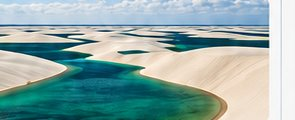
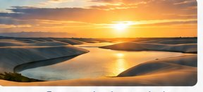
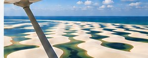
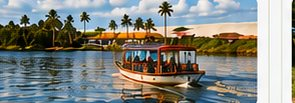
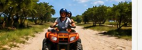
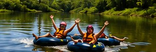
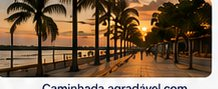
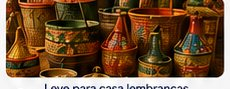
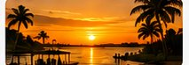

Trilha Barreirinhas Viva
Dicas do que fazer em Barreirinhas - MA
Aproveite sua estadia no Horizonte IFMA 2026 para conhecer as belezas naturais, a cultura e as experiências únicas da região.
Passeios clássicos nas dunas
-

Circuito Lagoa Azul
Passeio de jardineira 4x4 que visita lagoas cristalinas e famosas do parque.
-

Circuito Lagoa Bonita
Famoso pelas dunas mais altas e por oferecer um pôr do sol inesquecível do alto da areia.
-

Voo Panorâmico
Sobrevoo de monomotor partindo do aeroporto local para ter a real dimensão das dunas e lagoas.
Passeios pelo rio e aventura
-

Passeio pelo Rio Preguiças
Rota de barco “voadeira” passando por Vassouras (Pequenos Lençóis), Mandacaru (com subida ao Farol Preguiças) e finalizando na vila de Caburé.
-

Trilha de Quadriciclo
Rota que atravessa vegetações, campos e dunas dos Pequenos Lençóis com paradas para banho.
-

Boia-cross no Rio Formiga
Descida relaxante pelas águas calmas e limpas no município vizinho de Indaiá/Tubarão.
O que fazer na cidade
-

Orla do Rio Preguiças (Beira-Rio)
Caminhada agradável com feirinhas de artesanato e restaurantes locais.
-
Gastronomia Regional
Provar pratos com peixes frescos e o tradicional arroz de cuxá à beira do rio.
-

Artesanato Regional
Leve para casa lembranças únicas produzidas pelos artesãos locais.
-

Passeio ao Entardecer
Aproveite o fim de tarde para relaxar e contemplar as paisagens incríveis.
Dica extra
Use roupas leves, protetor solar, leve sua garrafa de água e aproveite cada momento dessa experiência única.
Participe, conecte-se e viva o melhor do Horizonte IFMA 2026
Gestão, inovação e experiências que transformam.
{kind=link}